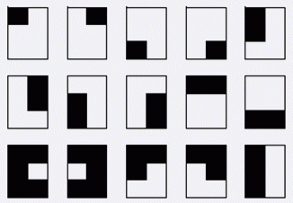

给一个 $ab$ 矩形，由 $ab$ 个单位正方形组成。你需要沿着网格线把它分成分空的两部分，每部分所有格子连通，且至少有一个格子在原矩形的边界上。“连通”是指任两个格子都可以通过水平或者竖直路径连在一起。求方案总数。例如 $3 \times 2$ 的矩形有 $15$ 种方案。

输入仅一行，为两个整数 $a$，$b$。
$1 \le a \le 6, 2 \le b \le 7$
输出仅一行，即方案总数。
3 2
15
 Comet OJ
Comet OJ